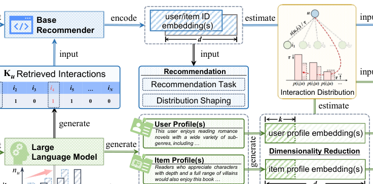
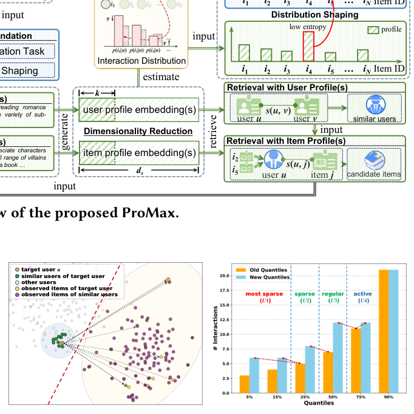
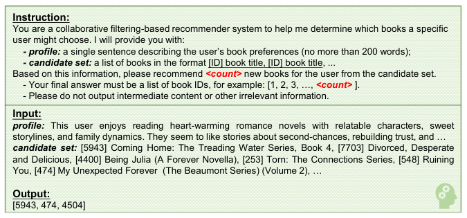
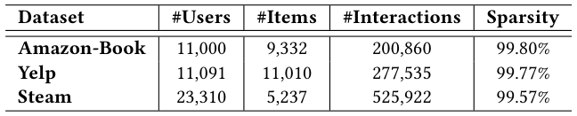
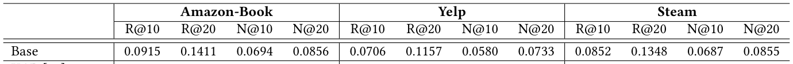
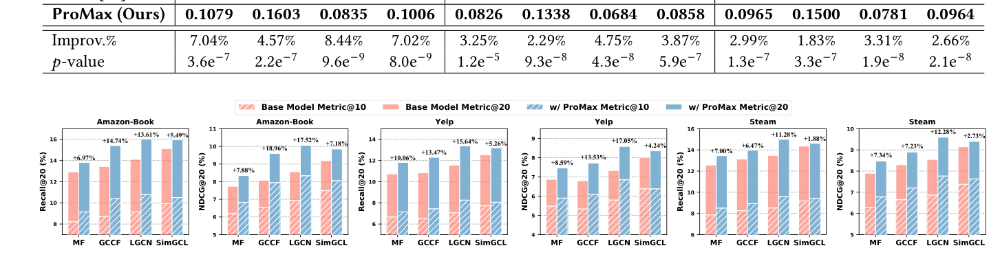
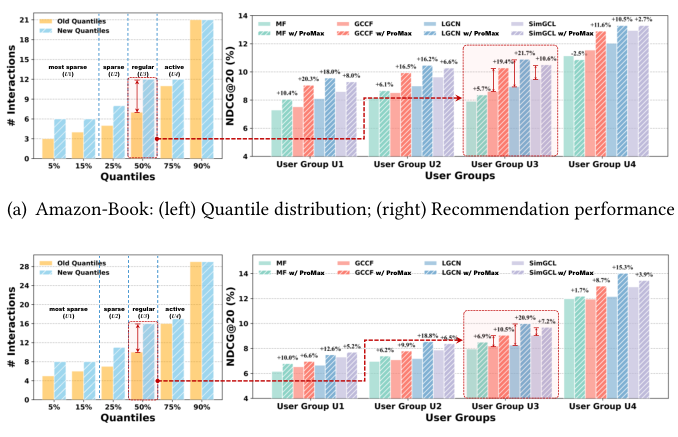
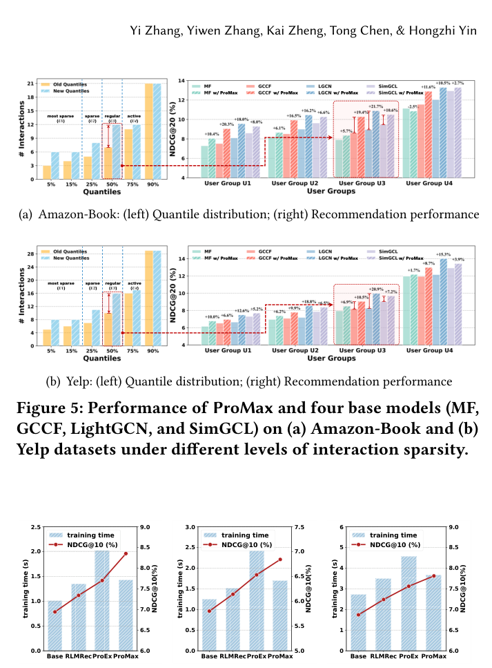

ProMax: Exploring the Potential of LLM-derived Profiles with Distribution Shaping for Recommender Systems (探索 LLM 派生画像结合分布塑形在推荐系统中的潜力)
- 会议/期刊: SIGIR 2026
- 推荐链路定位: 召回 (Retrieval) — 画像引导的候选检索 + 基座模型训练增强
- 研究方向: 大语言模型推荐 (LLM4Rec) / 协同过滤与双塔召回
- 论文原文: https://arxiv.org/abs/2604.26231v1
- 开源代码: https://github.com/BlueGhostYi/ProRec
TL;DR (核心速览)
针对 LLM 派生用户/物品画像"如何真正增强推荐"这一未解问题，ProMax 从检索视角出发，先用稠密检索验证画像蕴含强协同信号，再提出监督分布塑形（以画像分布为软标签、熵加权）与自监督分布塑形（原始交互 vs. 画像检索增强交互的双向一致性）两个即插即用损失，不改变基座架构。在 Amazon-Book/Yelp/Steam 三数据集、全库排序协议下，集成 LightGCN 后 NDCG@10 相对最强基线 ProEx 分别提升 8.44%/4.75%/3.31%。
Background & Motivation (背景与动机)
- 领域背景与主流范式: 通用推荐（general recommendation）主流范式是基于隐式反馈的 ID 嵌入协同过滤（MF、LR-GCCF、LightGCN、SimGCL），在统一隐空间中学习用户/物品表征，推理仅需一次内积或浅层投影。为缓解交互稀疏，近年兴起"LLM 作为语义增强器"路线：用 LLM 从物品标题、描述、评论中抽取结构化画像，再经文本编码器转为向量注入推荐模型（RLMRec、KAR、IRLLRec、ProEx 等）。
- 现有方法局限 (Limitations of Prior Work):
- 机制不明：画像为何能增强推荐缺乏解释，多数工作默认"拼接即有用"，未分析画像在特征空间中的作用方式。
- 非线性对齐引入语义损失：RLMRec 等用 MLP 强制画像维度与 ID 嵌入对齐，IRLLRec 构造多模态意图，ProEx 构造多份画像——额外人工设计与训练开销，且语言空间与推荐空间缺乏天然对齐，融合时引入语义不一致与噪声。
- 画像仅作辅助特征被"边缘化"：把高维抽象画像降格为外围信号，削弱其跨物品泛化性与抽象性；而直接用画像替换 ID 嵌入（AlphaRec）又会丢失细粒度区分能力（画像说"喜欢科幻"，但无法区分"哪一部科幻"），且画像冗余噪声会污染训练。
- 核心挑战 (Key Challenge): 画像来自预训练语言空间，ID 嵌入来自推荐场景塑造的协同空间，二者联系天然薄弱；简单拼接/加深网络/常规对比学习都无法回答"画像到底以何种形式、在何处起作用"。
- 核心洞察与切入点 (Key Insight): 作者用 Pilot Study（图 2(a)）在 Amazon-Book 上可视化画像表征分布，发现：(i) 目标用户与其相似用户、交互物品在画像空间中高度聚集，说明 LLM 画像本身蕴含显著协同信号；(ii) 用户画像与物品画像在特征空间中被清晰分离（红色虚线），说明二者由不同管线生成、语义信号不同。由此得出结论：画像无需被"塞回"模型二次训练，而应作为检索信号与分布级监督来引导基座模型。
Problem Formulation & Method (问题定义与方法架构)
1. 符号定义与输入表征 (Notations & Input Representations)
- 用户集 \(\mathcal{U}=\{u_1,\dots,u_M\}\)（\(M\) 用户），物品集 \(\mathcal{I}=\{i_1,\dots,i_N\}\)（\(N\) 物品）。
- 用户 \(u\) 的历史交互向量 \(\mathbf{x}_u\in\mathbb{R}^{1\times N}\)，交互过则 \(x_{ui}=1.0\)。
- 基座模型 \(f_\Theta\) 学习用户/物品嵌入 \(\mathbf{z}_u,\mathbf{z}_i\in\mathbb{R}^{1\times d}\)（默认 \(d=32\)），输出偏好分 \(p_\Theta(j|u)\)。
- LLM 画像：物品侧画像 \(P_i\)（由标题、描述、采样评论生成），用户侧画像 \(P_u\)（聚合物品-用户关系生成）；文本编码器 \(f_{\text{text}}\) 将画像转为语义表征 \(\mathbf{c}_u=f_{\text{text}}(P_u)\in\mathbb{R}^{1\times d_s}\)，\(d_s\gg d\)。
- 降维后画像表征 \(\tilde{\mathbf{c}}_u\in\mathbb{R}^{1\times\kappa}\)，实验中 \(\kappa=d=32\)。
2. 整体流水线 (Overall Architecture)
数据流：LLM 生成画像 → 文本编码 → PCA 降维 → 用户侧/物品侧稠密检索 → 稀疏度水平偏移控制预算 → LLM 重排 → 构造增强交互集 \(\mathcal{M}'_u\) → 基座模型训练时叠加两个分布塑形损失。
flowchart TD
A["输入层: 物品标题/描述/评论 + 用户历史交互"] --> B["LLM 画像生成 P_i, P_u"]
B --> C["文本编码 + PCA 降维至 κ 维"]
C --> D["用户侧稠密检索: Top-K 相似用户"]
D --> E["物品侧稠密检索: 候选物品集 C_u"]
E --> F["稀疏度水平偏移: 确定每用户预算 K_u"]
F --> G["LLM 重排 (GPT-4o-mini) 得 R_u^LLM"]
G --> H["增强交互集 M'_u = M_u ∪ R_u^LLM"]
H --> I["基座推荐模型 f_Θ (LightGCN 等)"]
C --> J["画像分布 p_LLM(i|u)"]
I --> K["监督分布塑形 L_SDR + 自监督分布塑形 L_S2DR"]
J --> K
K --> L["总损失 L_ProMax = L_rec + λ1·L_SDR + λ2·L_S2DR"]
3. 核心模块设计与数学原理 (Key Designs & Formulations)
(1) 画像降维（PCA 压缩）：对全体用户画像求均值 \(\boldsymbol{\mu}\) 与协方差 \(\boldsymbol{\Sigma}=\mathbf{V}\text{diag}(\boldsymbol{\Lambda})\mathbf{V}^\top\)，取前 \(\kappa\) 个主成分 \(\{\mathbf{v}_1,\dots,\mathbf{v}_\kappa\}\)，中心化后投影：
物理直觉：高维语义表征含大量弱语义冗余维度，PCA 在保留语义信息的同时把维度压到与 ID 嵌入一致（\(\kappa=d\)），使后续检索与分布计算开销可忽略。
(2) 画像引导候选检索（双阶段）： - 用户侧：\(\mathcal{R}^{\text{user}}_u=\text{TopK}\big(\{s(\tilde{\mathbf{c}}_u,\tilde{\mathbf{c}}_v)\mid v\in\mathcal{U}\setminus\{u\}\}\big)\)，\(s\) 为余弦相似度，\(K=100\)。 - 物品侧：统计相似用户交互过、目标用户未交互的物品计数 \(\text{count}_{\mathcal{R}^{\text{user}}_u}(i)\)，按 item-based CF 思路排序：
其中 \(\tilde{\mathbf{c}}^*_u=\bigoplus_{j\in\mathcal{M}_u}\tilde{\mathbf{c}}_j/|\mathcal{M}_u|\) 为交互物品画像的均值池化，\(\tfrac{1}{\sqrt{\text{count}}}\) 用于抑制流行度偏置。统计仅限相似用户集内，避免全局偏置。
(3) 稀疏度水平偏移 (Sparsity Level Shift)：以全体用户交互数的四分位数 \(\{Q_{0.25},Q_{0.5},Q_{0.75}\}\) 将用户分为最稀疏 \(U_1\)、稀疏 \(U_2\)、常规 \(U_3\)、活跃 \(U_4\) 四组，令
即把每个用户的交互数抬升到"下一档"，避免固定预算对长尾用户过度主导、对头部用户几乎无影响。随后用 LLM（GPT-4o-mini）对 \(\mathcal{R}^{\text{item}}_u\) 重排得 \(\mathcal{R}^{\text{LLM}}_u\)（图 3 给出指令模板与输入输出示例），最终 \(\mathcal{M}'_u=\{i\mid i\in\mathcal{M}_u\ \text{or}\ i\in\mathcal{R}^{\text{LLM}}_u\}\)。LLM 重排既做细粒度语义过滤、缓解曝光偏置，又以检索集为候选池规避幻觉。


(4) 双重分布塑形：定义分布 \(p_*(i|u)=\text{Softmax}_{i\in\mathcal{I}}\big(s(\mathbf{e}_u,\mathbf{e}_i)/\tau\big)\)，\(\tau=0.2\)；对基座模型 \(\mathbf{e}=\mathbf{z}\)，对画像 \(\mathbf{e}=\tilde{\mathbf{c}}\)。 - 监督分布塑形 (SDR)：以画像分布为软标签（stop-gradient），熵加权：
其中 \(w(u)=1-\hat{H}(u)\)，\(\hat{H}(u)=H(u)/\log|\mathcal{I}|\)，\(H(u)=-\sum_i p_{\text{LLM}}(i|u)\log p_{\text{LLM}}(i|u)\)。直觉：画像分布越集中（熵越低）说明 LLM 越确信，监督权重越大；该损失推动模型超越对已观测交互的记忆，对未观测物品给出偏好分布。 - 自监督分布塑形 (S2DR)：对同一用户，原始交互集 \(\mathcal{M}_u\) 与增强集 \(\mathcal{M}'_u\) 产生语义不同的表征，强制双向一致性：
其中 \(u^o,i^o\) 为交互集 \(o\) 输入模型所得的用户/物品语义源，\(\bar{o}\) 为相反视图。此外还引入同质节点（用户-用户、物品-物品）间的对比对齐。该模块缓解对原始画像的过度依赖，抵御 LLM 噪声与幻觉。
4. 训练目标、负采样与推理复杂度 (Optimization, Negative Sampling & Complexity)
- 损失函数：\(\mathcal{L}_{\text{ProMax}}=\mathcal{L}_{\text{rec}}+\lambda_1\cdot\mathcal{L}_{\text{SDR}}+\lambda_2\cdot\mathcal{L}_{\text{S2DR}}\)，\(\mathcal{L}_{\text{rec}}\) 为基座成对排序损失（BPR 类）。\(\lambda_1\in[0,2]\)、\(\lambda_2\in[0,0.2]\)，最优值：Amazon-Book 上 \(\lambda_1=1.5,\lambda_2=0.05\)；Yelp/Steam 上 \(\lambda_1=0.5,\lambda_2=0.1\)。
- 训练负采样策略：原文未显式报告负采样细节，仅说明"交互过的物品为正样本，其余为负样本"，沿用基座模型（LightGCN/BPR）默认设置；SDR 的软标签覆盖全物品集，S2DR 为批内双向视图对比，均非显式负采样。
- 时间与空间复杂度：\(\mathcal{L}_{\text{SDR}}\) 为 \(O(|\mathcal{B}|N\max(d,\kappa))\)，\(\mathcal{L}_{\text{S2DR}}\) 为 \(O(|\mathcal{B}|^2 d)\)，均低于基座编码开销。画像生成、PCA 降维、稠密检索、LLM 重排全部在预处理阶段完成，与推荐模型训练解耦；因 \(\kappa\ll d_s\)，检索耗时在实际中可忽略。图 6 显示 ProMax 训练耗时高于基座但低于 ProEx，性能最优。
Experimental Setup & Evaluation Protocol (实验设置与评估协议)
- 数据集统计与预处理: 三个极稀疏数据集，过滤评分低于 3.0 的交互，交互过即正样本：
| 数据集 (Dataset) | 用户数 (#Users) | 物品数 (#Items) | 交互数 (#Interactions) | 稀疏度 (Sparsity) | 模态/辅助特征说明 |
|---|---|---|---|---|---|
| Amazon-Book | 11,000 | 9,332 | 200,860 | 99.80% | 书籍标题/描述/用户评论，画像来自 RLMRec |
| Yelp | 11,091 | 11,010 | 277,535 | 99.77% | 商户评论文本 |
| Steam | 23,310 | 5,237 | 525,922 | 99.57% | 游戏描述与评论文本 |

- 数据划分方式 (Splitting Strategy): 按 3:1:1 比例划分训练/验证/测试集（非时间戳切分，原文未说明是否按全局时间排序，存在一定未来信息泄露风险，属该基准的常见设定）。
- 排名评测协议 (Ranking Protocol): Full-Ranking（全库排序），对每个用户对全量未交互物品打分，无负采样偏差。
- 评价指标与显著性检验: Recall@10/20、NDCG@10/20；所有模型嵌入维度 \(d=32\)、LightGCN 三层图卷积、无 dropout、学习率 1.0e-3、批大小 4096、Xavier 初始化、Adam 优化；10 个随机种子取平均；采用双尾配对 \(t\) 检验，表 2 报告 \(p\) 值（最低至 \(9.6\times10^{-9}\)，全部远小于 0.05）。
Key Experimental Results (核心实验结果)
1. 主实验对比 (Main Results)
以 LightGCN 为统一基座，对比 9 个 LLM 增强基线（KAR、LLMRec、CARec、RLMRec-C/G、AlphaRec/AlphaRec+、LLMESR、AlphaFuse、IRLLRec、ProEx）：
| 数据集 | 指标 | 基座 LightGCN | 最强基线 ProEx | 本文 ProMax | 相对提升 (Improv.) | \(p\) 值 |
|---|---|---|---|---|---|---|
| Amazon-Book | R@10 / N@10 | 0.0915 / 0.0694 | 0.1008 / 0.0770 | 0.1079 / 0.0835 | +7.04% / +8.44% | 3.6e-7 / 9.6e-9 |
| Amazon-Book | R@20 / N@20 | 0.1411 / 0.0856 | 0.1533 / 0.0940 | 0.1603 / 0.1006 | +4.57% / +7.02% | 2.2e-7 / 8.0e-9 |
| Yelp | R@10 / N@10 | 0.0706 / 0.0580 | 0.0800 / 0.0653 | 0.0826 / 0.0684 | +3.25% / +4.75% | 1.2e-5 / 4.3e-8 |
| Yelp | R@20 / N@20 | 0.1157 / 0.0733 | 0.1308 / 0.0826 | 0.1338 / 0.0858 | +2.29% / +3.87% | 9.3e-8 / 5.9e-7 |
| Steam | R@10 / N@10 | 0.0852 / 0.0687 | 0.0937 / 0.0756 | 0.0965 / 0.0781 | +2.99% / +3.31% | 1.3e-7 / 1.9e-8 |
| Steam | R@20 / N@20 | 0.1348 / 0.0855 | 0.1473 / 0.0939 | 0.1500 / 0.0964 | +1.83% / +2.66% | 3.3e-7 / 2.1e-8 |

模型无关性验证（图 4）：ProMax 集成到 MF、LR-GCCF、LightGCN、SimGCL 四个基座，所有数据集全部指标均有提升。以 Recall@20 为例，LightGCN 上分别提升 13.3%（Amazon-Book）、15.64%（Yelp）、12.28%（Steam）；GCCF 受益次之（原文归因于其冗余特征变换被额外监督缓解）；SimGCL 提升最小（其自监督信号已丰富，ProMax 更多是互补）。

2. 消融实验与控制变量分析 (Ablation Study)
三个变体：V1 移除自监督分布塑形（式 14）；V2 移除监督分布塑形（式 12）；V3 用原始候选集 \(\mathcal{R}^{\text{item}}_u\) 替换 LLM 重排集 \(\mathcal{R}^{\text{LLM}}_u\)（同样施加稀疏度偏移以保证公平）。
- 所有变体均显著优于基座，说明核心组件有效；相对 ProMax 均有不同程度下降，说明两个分布塑形缺一不可——V1 仅依赖原始画像，V2 缺失 LLM 画像的直接引导。
- V3 略逊于 ProMax，验证 LLM 细粒度语义重排的必要性与有效性（提升幅度较小，属"锦上添花"）。
- 原文未报告参数量对齐或图度数匹配的额外控制变量消融。
3. 稀疏度/冷启动分桶与超参敏感度 (Sparsity Buckets & Hyperparameters)
- 交互频次分桶（图 5）：按四分位分 \(U_1\)（最稀疏）至 \(U_4\)（活跃）四组，ProMax 在所有用户组均优于四个基座，且对低活跃组提升尤为明显；常规用户组 \(U_3\) 提升最大——因稀疏度偏移后 \(U_3\) 获得最多潜在交互，候选集显著扩充；活跃用户 \(U_4\) 因交互已充足几乎不受影响。这直接验证了稀疏度水平偏移的设计动机。
- 超参敏感度（图 8）：\(\lambda_1\) 最优值 Amazon-Book 1.5、Yelp/Steam 0.5；\(\lambda_2\) 最优值 0.05/0.1/0.1。Amazon-Book 趋势与其他两数据集不同（归因于数据分布差异），但 ProMax 对两超参整体鲁棒，未精确取到最优组合时性能仍稳定。
- 效率对比（图 6）：基座 LightGCN 训练耗时最低但性能最弱；RLMRec 中等开销、明显增益；ProEx 性能更高但耗时显著增加（多画像策略）；ProMax 在三数据集上性能最优，额外耗时相对基座属"适度"范围。
- 线上 A/B 测试: 原文未报告，仅含离线实验。


Highlights, Limitations & Critiques (亮点、局限与审稿级批判)
- 核心亮点与可迁移性:
- 视角转换：把 LLM 画像从"待融合的特征"重新定义为"检索信号 + 分布级软监督"，绕开语言空间与协同空间的强制对齐难题，无需额外 MLP/adapter，架构零改动、即插即用。
- 熵加权软标签：用画像分布熵 \(w(u)=1-\hat{H}(u)\) 自适应校准监督强度，是对 LLM 不确定性的一种轻量、可解释的利用方式，可迁移到任何"外部软标签蒸馏"场景。
- 稀疏度水平偏移：按分位数把用户交互抬升到下一档，兼顾长尾扶持与头部不扰动，是一个简洁且可复用的数据增强预算分配策略。
- 双向一致性自监督：原始视图与画像检索增强视图互为监督，天然缓解 LLM 幻觉噪声，思路可迁移到其他"外部知识增强"的自监督框架。
- 局限性与审稿视角批判 (Critical Limitations):
- 评估协议：3:1:1 随机划分而非全局时间戳切分，存在未来信息穿越风险；且仅三个中等规模公开数据集，缺少工业级大规模验证与线上 A/B。
- LLM 依赖与成本：画像生成 + GPT-4o-mini 重排均为预处理阶段的外部 API 调用，论文未报告 token 成本、重排延迟与失败率；LLM 版本更替会带来画像分布漂移，可复现性受外部服务影响。
- 负采样与损失细节缺失：\(\mathcal{L}_{\text{rec}}\) 的具体形式、批内负采样方式未明确交代；S2DR 的批内双向对比在 \(|\mathcal{B}|=4096\) 下的实际显存开销未报告。
- 提升幅度递减：Steam 上相对 ProEx 的 NDCG@10 提升仅 3.31%，且 V3 消融显示 LLM 重排贡献有限，核心增益主要来自两个分布塑形损失，LLM 重排的边际价值需更细粒度论证。
- 画像质量上限：方法效果受制于初始画像质量（沿用 RLMRec 画像），若画像本身噪声大，熵加权只能缓解而非根治；论文未做画像质量劣化的鲁棒性压力测试。
Rating (四维评分)
- 方法创新性 (Novelty): ⭐⭐⭐⭐ — 检索视角重释画像 + 双重分布塑形，思路简洁且有洞察，但组件（软标签蒸馏、一致性正则、分位数预算）均为已有技术的巧妙组合。
- 评估协议与实验扎实度 (Protocol & Experiments): ⭐⭐⭐⭐ — 全库排序、10 种子、配对 \(t\) 检验、9 个 LLM 基线 + 4 个基座模型无关性验证、稀疏度分桶充分；扣分于随机划分与缺少线上验证。
- 写作与数学规范度 (Clarity & Rigor): ⭐⭐⭐⭐ — 公式推导清晰、算法伪代码完整、动机图（图 2）直观；部分符号（如式 4 中 \(\mathbf{v}_\kappa\) 重复出现）存在笔误，负采样细节略欠。
- 工业落地与复现价值 (Industrial & Practical Value): ⭐⭐⭐⭐ — 即插即用、预处理与训练解耦、代码已开源；但依赖 LLM API 的预处理成本与画像漂移是落地主要顾虑。